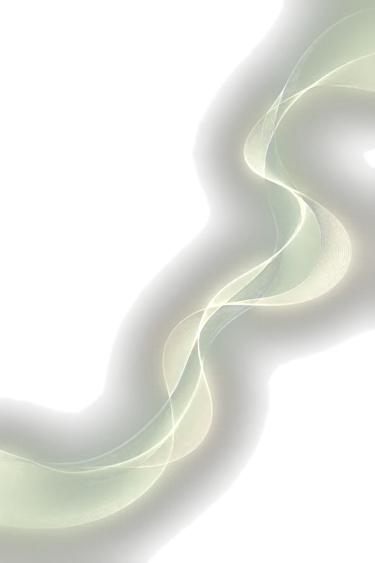

Sport zali
Qaramlik tanaga ham zarba beradi, shuning uchun kun tartibida sport bor. Sport zalida zoʻriqishni ichingizda saqlamay, chiqarib yuborish mumkin.
Agar yaqiningizga yoki oʻzingizga qanday yordam berishni bilmay bu maktubni oʻqiyotgan boʻlsangiz — demak, birinchi qadamni allaqachon qoʻydingiz.
Biz — Vector tiklanish markazi, Samarqandda Oʻzbekiston Respublikasi Sogʻliqni saqlash vazirligining statsionar davolash litsenziyasiga ega birinchi reabilitatsiya markazimiz. Alkogol, giyohvand moddalar va qimorga qaram boʻlgan insonlarga hamda ularning oilalariga koʻmaklashamiz. Biz chiqish yoʻlini topishga yordam beramiz.
Bizga qoʻngʻiroq qiling yoki yozing, biz sizni tinglaymiz: xotirjam, gapingizni boʻlmasdan va ayblamasdan. Keyin nima qilish kerakligini tushuntiramiz.
Agar charchagan boʻlsangiz-u, qanday toʻxtashni bilmasangiz — biz yordam beramiz.
«Men uddalay olmayman». — «Biz uddalay olamiz».
Ehtimol, hisobga qoʻyishlaridan qoʻrqayotgandirsiz. Yoʻq, biz narkologik hisobga qoʻymaymiz. Barcha qoʻngʻiroqlar anonim, markazda boʻlish ham anonim. Ismingizni aytmasangiz ham boʻladi, maʼlumotlaringizni hech kimga bermaymiz.

Birinchi uchrashuv — bu mutaxassis bilan xotirjam suhbat. Konsultatsiya bepul va hech narsaga majbur qilmaydi.
Unda dastur, kun tartibi va narxni muhokama qilamiz. Ular insonning holatiga bogʻliq, shuning uchun ularni faqat yuzma-yuz uchrashuvda aytamiz.
Yaqiningizsiz oʻzingiz ham kelishingiz mumkin. Koʻpincha birinchi boʻlib oila aʼzolari keladi.

Agar u muammoni tan olmasa, uni ham, oʻzingizni ham ayblamang. Inkor qilish — oʻjarlik emas, kasallikning koʻp uchraydigan belgisi.
Mutaxassisimiz uyingizga kelib, inson yordamga oʻzi rozi boʻladigan tarzda suhbatlashishi mumkin. Hech kim majburan olib ketilmaydi: davolash faqat yozma rozilik bilan boshlanadi, buni Oʻzbekiston qonuni ham talab qiladi.

Bu — dastur davomida inson yashaydigan xonalardan biri. Biz markazni kasalxona emas, uy kabi tashkil qildik, chunki tinch joyda tuzalish osonroq.
Xonalar 3–4 kishilik, har birida alohida yuvinish xonasi va konditsioner bor. Kuniga uch mahal ovqat.


Har kuni — «12 qadam» dasturi boʻyicha guruh mashgʻulotlari va psixolog bilan yakka tartibdagi ish. Guruhda inson boshqalarni eshitadi va yolgʻiz emasligini tushunadi.
Dasturni Qozogʻistondan taklif etilgan mutaxassislar olib boradi: klinik psixologlar, narkologlar va addiktologlar.

Qaramlik tanaga ham zarba beradi, shuning uchun kun tartibida sport bor. Sport zalida zoʻriqishni ichingizda saqlamay, chiqarib yuborish mumkin.

Issiq taft, suv va dam olish — tiklanishga yordam beradigan oddiy narsalar.

Bunga ehtiyoji bor insonlar uchun sokin ibodat xonasi mavjud. Bu yerda oʻzingiz bilan yolgʻiz qolishingiz mumkin.
Yaqin insonning qaramligi butun oilani holdan toydiradi. U xavfsiz joyda ekan, siz ham yordam olishingiz mumkin.
Har shanba soat 11:00 da ofisimizda psixologlar qarindoshlar uchun uchrashuvlar oʻtkazadi. Oila bilan qoʻngʻiroq va uchrashuvlarni mutaxassislar tavsiyasiga koʻra, tiklanish uchun foydali boʻlgan paytda tashkil qilamiz.

Markaz hovlisida bogʻ va favvora bor. Bu yerda sokinlikda oʻtirib, kelajak haqida oʻylash mumkin.
Kursdan keyin xayrlashmaymiz: hushyorlik uyda ham saqlanib qolishi uchun yoningizda boʻlamiz.

Markaz asoschisi va dastur koordinatori — Temirxan Nurjan Kadirxanovich, uning 10 yildan ortiq tajribasi bor.
Jamoamiz aʼzolarini ochiq koʻrsatamiz, chunki yaqiningizni kimga ishonib topshirayotganingizni bilish muhim.

Faqat soʻzning oʻziga ishonish qiyin, shuning uchun hujjatlarni koʻrsatamiz.
Markaz Oʻzbekiston Respublikasi Sogʻliqni saqlash vazirligining tibbiy faoliyat uchun №1857962 litsenziyasi asosida ishlaydi: psixiatriya, diagnostika, konsultatsiya va statsionar davolash. Litsenziya 17.09.2031 gacha amal qiladi. Biz Samarqandda bunday litsenziyaga ega boʻlgan birinchi reabilitatsiya markazimiz. Unda tekshirish uchun QR-kod bor, nusxalarda manzil yashirilgan.

Konsultatsiya bepul, malomatsiz va majburiyatsiz. Biz shunchaki tinglaymiz.
Hurmat bilan,
Vector markazi jamoasi
P.S.Qoʻngʻiroq hech narsaga majbur qilmaydi. Biz hisobga qoʻymaymiz va maʼlumotlarni hech kimga bermaymiz.